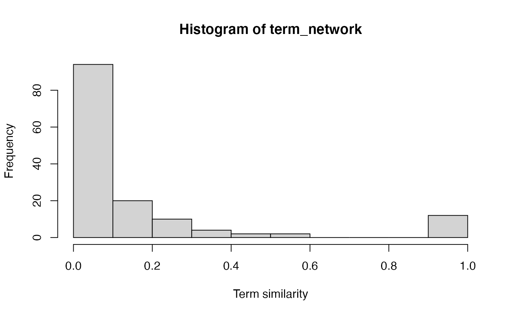
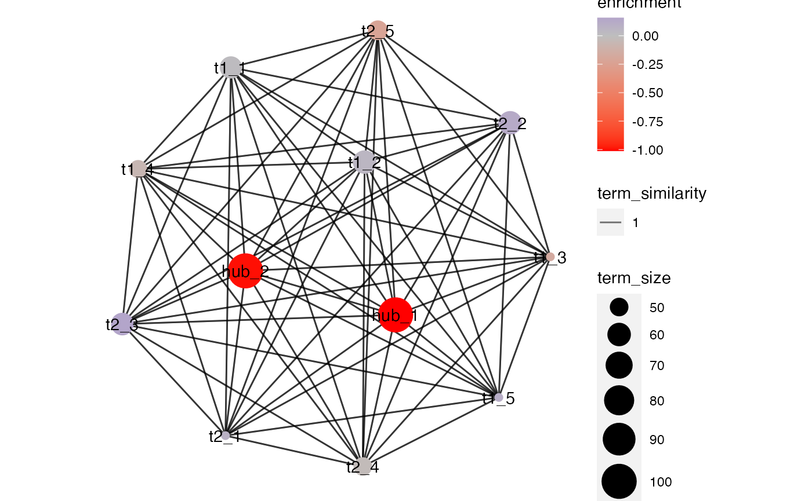

if (!require("BiocManager", quietly = TRUE)) {
install.packages("BiocManager")
}
BiocManager::install("pareg")We start by constructing a dataframe containing pathway information.
term_list <- list(
hub_1 = paste0("g", 1:100),
hub_2 = paste0("g", 71:170)
)
generate_term <- function(main_nodes, other_node_marker, term_count) {
function(x) {
other_nodes <- paste0(x, other_node_marker, 1:100)
term_size <- 50 + sample.int(20, 1) - 10 # random int in (40, 60]
c(
sample(main_nodes, round(x / term_count * term_size)),
sample(other_nodes, round((1 - x / term_count) * term_size))
)
}
}
term_count <- 5
term_list <- c(
term_list,
set_names(seq_len(term_count), paste0("t1_", seq_len(term_count))) %>%
purrr::map(generate_term(term_list$hub_1, "_tg1_", term_count)),
set_names(seq_len(term_count), paste0("t2_", seq_len(term_count))) %>%
purrr::map(generate_term(term_list$hub_2, "_tg2_", term_count))
)
df_terms <- term_list %>%
enframe("term", "gene") %>%
unnest_longer(gene)
df_terms %>%
group_by(term) %>%
summarize(size = n()) %>%
arrange(desc(size)) %>%
head() %>%
knitr::kable()| term | size |
|---|---|
| hub_1 | 100 |
| hub_2 | 100 |
| t1_2 | 60 |
| t2_2 | 60 |
| t2_3 | 58 |
| t1_1 | 57 |
We then select a subset of genes to serve as the differentially expressed genes of our synthetic study.
active_terms <- c("hub_1", "hub_2")
de_genes <- df_terms %>%
filter(term %in% active_terms) %>%
distinct(gene) %>%
pull(gene)
other_genes <- df_terms %>%
distinct(gene) %>%
pull(gene) %>%
setdiff(de_genes)For these genes, we can generate artificial p-values.
df_study <- data.frame(
gene = c(de_genes, other_genes),
pvalue = c(rbeta(length(de_genes), 0.1, 1), rbeta(length(other_genes), 1, 1)),
in_study = c(
rep(TRUE, length(de_genes)),
rep(FALSE, length(other_genes))
)
)
table(df_study$pvalue <= 0.05, df_study$in_study, dnn = c("sig. p-value", "in study"))## in study
## sig. p-value FALSE TRUE
## FALSE 199 42
## TRUE 13 128We start the pathway enrichment analysis by computing term similarities with pareg’s helper functions.
term_network <- compute_term_similarities(df_terms)
hist(term_network, xlab = "Term similarity")
We can then compute our pathway enrichment values.
fit <- pareg(df_study %>% select(-in_study), df_terms, network_param = 1, term_network = term_network)## Warning: Unknown columns: `NA`## Warning: family beta is still experimental. enjoy with care.
fit %>%
as.data.frame() %>%
arrange(desc(abs(enrichment))) %>%
head() %>%
knitr::kable()| term | enrichment |
|---|---|
| hub_1 | -1.6158538 |
| hub_2 | -1.4472283 |
| t2_5 | -0.3283120 |
| t1_3 | -0.2746188 |
| t2_2 | 0.1951274 |
| t1_1 | 0.1357297 |
And finally, we can visualize the obtained results.
plot(fit, min_similarity = 0.1)